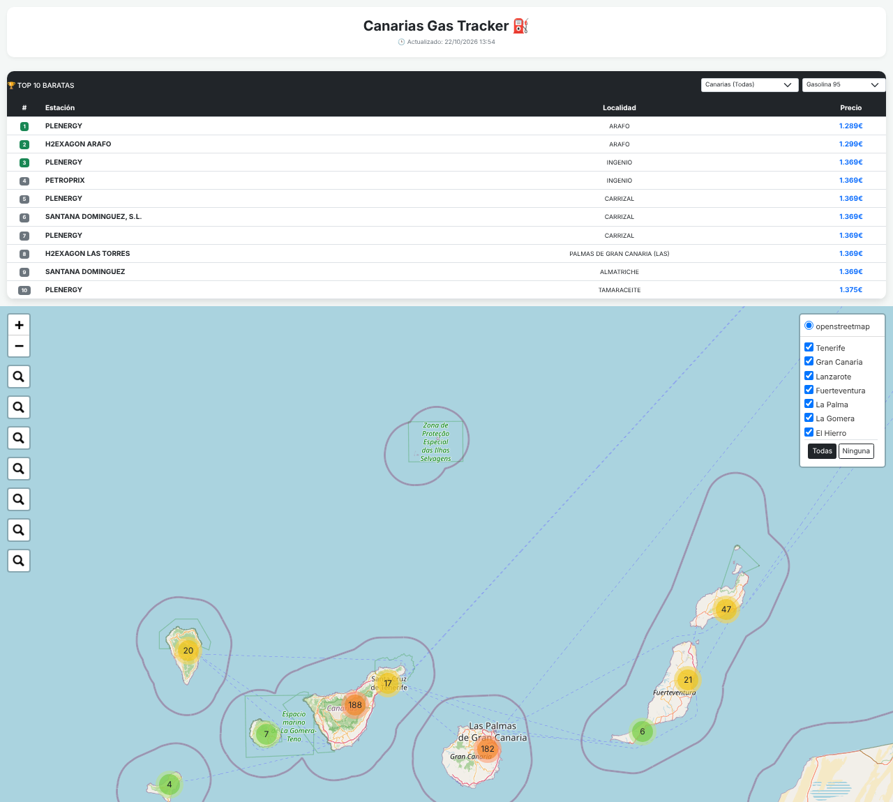

La gasolina más barata de las islas.
Un mapa con las cerca de 430 gasolineras de Canarias y lo que cuesta el litro en cada una, sacado de los datos abiertos del Ministerio. Se actualiza solo cada mañana, sin servidores y sin pagar nada. Aquí cuento qué problema resuelve, cómo funciona por dentro y lo que aprendí haciéndolo.
- En marcha
- Desde abril de 2026
- Cada día
- ~430 gasolineras, 7 islas
- Histórico
- 168 días, 72.087 filas
- Coste
- 0 €
- Hecho con
- Python, pandas, Folium (Leaflet) y GitHub Actions
01 Qué problema resuelve
El mismo litro, 33 céntimos de diferencia.
Canarias tiene su propio régimen fiscal y cada isla su propia logística, así que el precio cambia mucho de una isla a otra y de una gasolinera a la de al lado. El 25 de noviembre de 2026, en Gran Canaria, el litro de gasolina 95 iba de 1,289 € a 1,621 €: 33 céntimos, unos 16 € en un depósito de 50 litros.
El dato existe: el Ministerio para la Transición Ecológica publica cada día el precio de todas las gasolineras de España. Pero llega en bruto: un archivo enorme con comas decimales, sin la isla, sin el precio de ayer y sin un mapa para mirarlo. El Gas Tracker hace ese trabajo cada mañana: se queda con Canarias, lo limpia, lo compara con el día anterior y lo pone en un mapa.
¿Qué isla tiene la gasolina más barata?
Gasolina 95 Diésel · € por litro, mediana del día
Ver los datos
| Isla | Gasolina 95 | Diésel | Gasolineras |
|---|---|---|---|
| Fuerteventura | 1,456 € | 1,584 € | 24 |
| Gran Canaria | 1,459 € | 1,659 € | 156 |
| Lanzarote | 1,464 € | 1,599 € | 36 |
| Tenerife | 1,499 € | 1,689 € | 184 |
| La Palma | 1,570 € | 1,792 € | 20 |
| La Gomera | 1,729 € | 1,949 € | 7 |
| El Hierro | 1,759 € | 1,975 € | 4 |
Fuerteventura, Gran Canaria y Lanzarote rondan 1,46 € el litro de gasolina 95; La Gomera y El Hierro pasan de 1,72 €. En las islas grandes, lo que más cuenta es elegir bien la gasolinera.
02 Cómo funciona
Un robot que madruga.
Por dentro es un proceso de datos de los de siempre (descargar, limpiar, analizar y publicar) metido en un solo script de Python, mapa_pro.py, que GitHub Actions ejecuta cada mañana: a las 7 en invierno y a las 8 en verano, hora canaria. No hay servidor ni base de datos: el propio repositorio de GitHub guarda el histórico y GitHub Pages publica la web.
- 01
Descarga
Pide a la API REST del Ministerio la lista de todas las gasolineras de España con sus precios. Si no contesta, lo vuelve a intentar (más abajo cuento por qué).
- 02
Limpieza
Se queda con las provincias 35 y 38, convierte las comas decimales en números y descarta las gasolineras sin coordenadas. Si quedan menos de 100, la respuesta está incompleta y no sigue.
- 03
La isla
La API da el municipio, pero no la isla. Una función la deduce buscando trozos del nombre del municipio en mayúsculas (TELDE, ARONA, TÍAS…), para que no la descoloquen las tildes ni las variantes.
- 04
Histórico
Añade los precios del día a
historico_precios.csvy, con el día anterior, calcula cuánto subió o bajó cada gasolinera. - 05
Mapa
Folium, que dibuja mapas de Leaflet desde Python, genera un único
index.htmlcon el mapa, la tabla de las más baratas y los filtros en JavaScript. - 06
Publicación
GitHub Actions sube el mapa y el histórico al repositorio, y GitHub Pages los publica. Nadie tiene que tocar nada.
03 El mapa
Lo que ves al abrirlo.
- Las diez gasolineras más baratas, de toda Canarias o de una isla, en gasolina 95 o en diésel.
- Todas las gasolineras en el mapa, agrupadas por zonas, con una capa por isla que se enciende y se apaga.
- Un color según el precio del día: verde para la cuarta parte más barata, rojo para la cuarta parte más cara y naranja para el resto.
- Al pulsar una gasolinera: dirección, precios y una flecha ▲▼ con lo que cambió desde el día anterior.
- Un buscador por isla para encontrar una gasolinera o un pueblo.

04 Lo que aprendí
Lo que no sale en los tutoriales.
Una API pública no es una API que siempre conteste.
El servidor del Ministerio rechazaba muchas de las peticiones que llegaban desde GitHub Actions, que funciona en máquinas de los centros de datos de Microsoft Azure. Y lo peor no fue el bloqueo, sino que no avisaba: el script fallaba, escribía un aviso y terminaba sin error, así que GitHub daba la ejecución por buena. Entre el 29 de abril y el 26 de mayo no se guardó ni un solo día.
La solución fue diseñar contando con el fallo. Si la API no contesta, el script lo vuelve a intentar a los 5, 10 y 15 minutos, media hora en total. Si llegan menos de 100 gasolineras, da la respuesta por mala. Y si al final no consigue datos, no toca nada de lo publicado y termina con error, para que el fallo se vea.
¿Qué días guardó precios el robot?
Con datos Sin datos
Antes: 11 de 45 días Después: 157 de 181 días (87 %)
No lo arregla del todo: algún día al mes la API sigue sin contestar ni a la media hora. Ese día el mapa enseña los últimos precios buenos, con la fecha de actualización arriba, y el hueco se queda en el histórico tal cual, sin rellenarlo con datos inventados.
El fondo del mapa también es una dependencia.
Un día el mapa apareció tapado por un aviso: «API KEY REQUIRED». Los datos estaban bien; lo que fallaba eran las teselas, las imágenes que forman el fondo del mapa. Eran las de CARTO, que empezaron a pedir clave. El arreglo fue una línea en mapa_pro.py: pasar a las teselas de OpenStreetMap, con su atribución. La lección es que todo lo que una página carga de fuera puede romperse sin que tú cambies nada, así que no basta con que el robot termine en verde: hay que mirar de vez en cuando la web publicada.
Umbrales que se mueven con los precios.
Un color fijo («rojo si pasa de 1,45 €») se queda viejo en cuanto se mueven los precios, y se mueven: la mediana de la gasolina 95 en Canarias pasó de 1,409 € en julio a 1,559 € en octubre. Por eso el color se calcula cada día con cuartiles: verde es la cuarta parte más barata de ese día, cueste lo que cueste.
Lo que más vale es el histórico.
El mapa enseña el día de hoy, pero el CSV que se va llenando cada mañana ya tiene más de 72.000 filas desde abril. Es lo que permite saber si una gasolinera subió o bajó y lo que hace posible lo siguiente: la evolución del precio por isla y por marca, y avisos cuando una gasolinera toca su mínimo.
Pruébalo.
Abre el mapa y busca tu gasolinera. El código y el histórico están en GitHub, a la vista. Y si necesitas algo parecido con tus datos (un mapa, un panel o un proceso que se haga solo), escríbeme.
Publicado el 26 de noviembre de 2026 · Henry Barrios Thornhill (hbtdata)